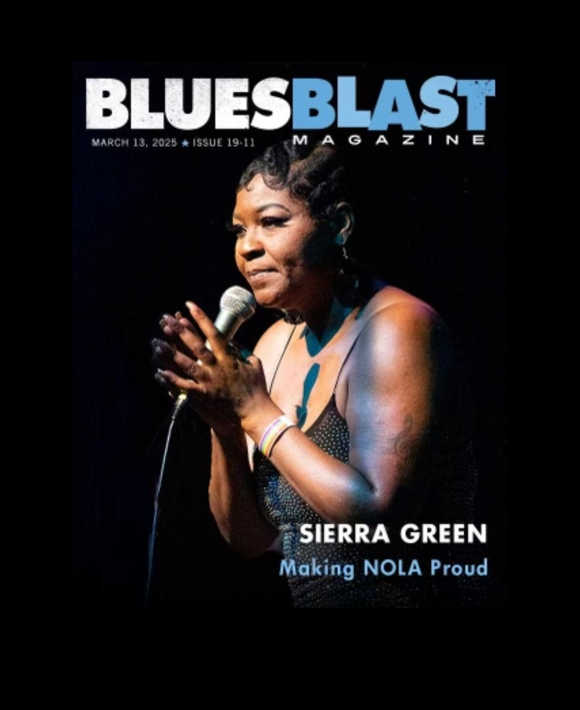
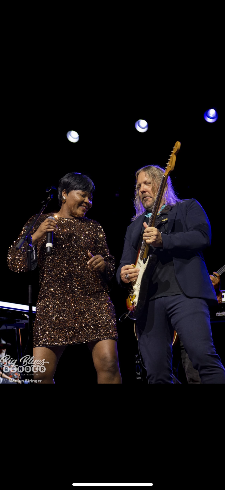
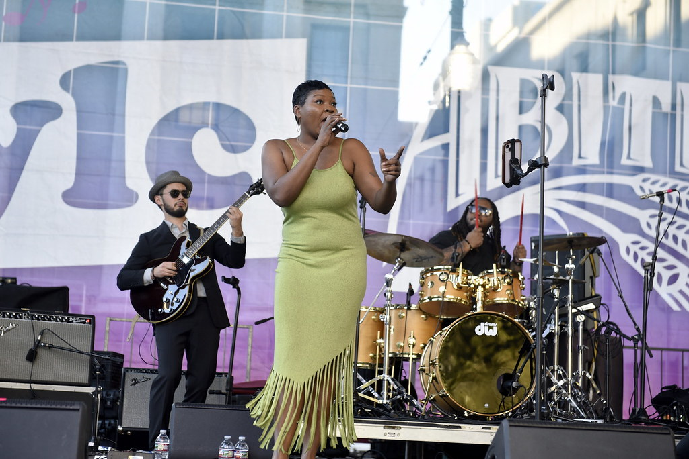
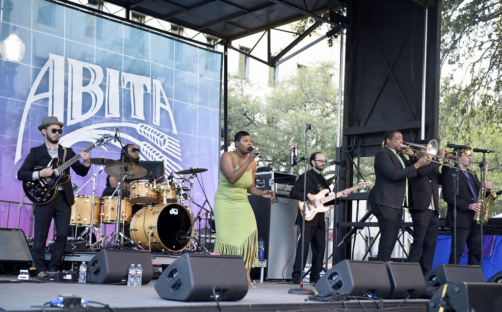

NEW ORLEANS // R&B // SOUL
Sierra Green is a powerhouse vocalist from New Orleans’ 7th Ward who earned the moniker “Queen of Frenchmen Street.” She channels her passionate, soaring voice into a blend of soul, R&B and jazz influences. Her band, The Giants, features hand-picked local musicians that bring a classic yet modern sound to clubs across New Orleans and beyond. In the fall of 2023 she teamed up with pianist and composer David Torkanowsky to record a five-song collection, re-imagining classics like The Meters’ “Break in the Road” while introducing originals such as “One Thing” and “He Called Me Baby.” Collaborations in Nashville with guitarist J.D. Simo continue to shape her debut album era.




| Date | Event | Venue | Location | Time |
|---|---|---|---|---|
| Apr 23, 2026 | Sierra Green and the Giants | New Orleans' Jazz and Heritage Festival - Blues Tent | New Orleans, LA | 3:50 PM |
| Apr 26, 2026 | Sierra & The Green Notes (Jazz) | Balcony Music Club | New Orleans, LA | 3:00 PM – 5:30 PM |
| Apr 30, 2026 | Sierra & The Green Notes (Jazz) | Café Negril | New Orleans, LA | 6:00 PM – 9:30 PM |
| May 2, 2026 | Sierra Green | Original Big 7 Ball (Tickets at Door) | New Orleans, LA | 8:00 PM – 1:00 AM |
| May 10, 2026 | Sierra & The Green Notes (Jazz) | Balcony Music Club | New Orleans, LA | 3:00 PM – 5:30 PM |
| May 16, 2026 | Sierra Green & The Giants | Balcony Music Club | New Orleans, LA | 9:00 PM – 11:30 PM |
| May 24, 2026 | Sierra & The Green Notes (Jazz) | Balcony Music Club | New Orleans, LA | 3:00 PM – 5:30 PM |
| May 30, 2026 | Sierra Green & The Giants | Balcony Music Club | New Orleans, LA | 9:00 PM – 11:30 PM |
Times and dates are subject to change; please check venue listings for the latest information.